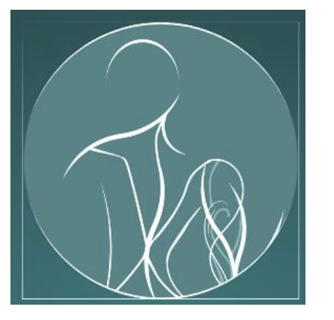
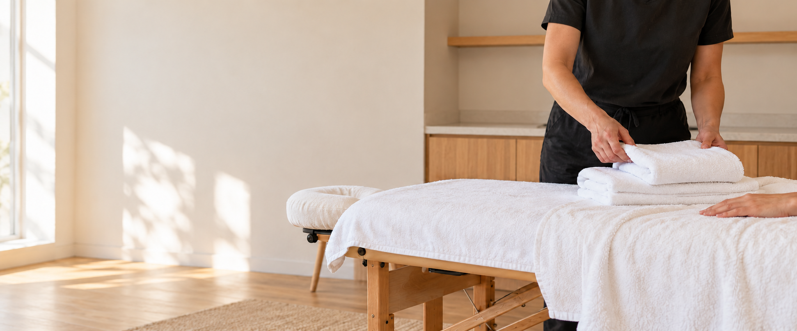

Masaje deportivo
Descarga y trabajo profundo para personas activas, antes o después de entrenar.

SPORT MASSAGESofía combina formación finlandesa, escucha y técnica para ayudarte a moverte mejor y sentirte bien en tu cuerpo.
Reservar una sesión ↗
Tratamientos para aliviar tensión muscular, apoyar la recuperación y mejorar la movilidad. Desde el deporte hasta el trabajo de oficina, cada sesión se adapta a lo que tu cuerpo necesita hoy.
Descarga y trabajo profundo para personas activas, antes o después de entrenar.
Técnicas suecas para liberar tensión y volver a un estado de calma.
Tratamientos específicos para hombros, espalda, cadera y piernas.
Cuello, hombros, cadera y espalda para quienes pasan el día sentados.
Trabajo especializado sobre masetero y mandíbula.
Una técnica suave y rítmica para acompañar el bienestar corporal.
“El objetivo no es solo aliviar hoy. Es ayudarte a entender mejor tu cuerpo.”— Sofía · Sport Massage Fuengirola
Escríbele a Sofía para consultar disponibilidad y reservar por WhatsApp.
+34 743 01 75 27
Fuengirola · cita previa